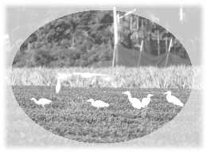

| Style de vie de l'âge d'or |
dans une plantation de thé |
 Quand j'étais au lycée, ma famille a commencé une plantation de thé. J'apprenais le commerce avec mon père, en aidant à la ferme pendant les vacances et en acquérant certaines connaissances de base à propos de la production de thé. Après être diplômée de l'université, j'ai eu la bénédiction d'être initiée par Maître. J'avais depuis longtemps aspiré à renoncer à la vie séculaire et à La suivre, mais Elle a refusé gentiment ma requête et a brisé mon rêve romantique : " Créons un village spirituel là où nous vivons... Vous devez être le centre de la lumière dans la société où vous vivez, où vous travaillez, où vous avez vos racines. " Aucun mot ne pouvait décrire la frustration et la déception que j'avais senties à ce moment-là. Cependant, la mort dans l'âme, je regardais la vie en face et m'aventurais dans une nouvelle phase d'étude : devenir indépendante.
A cette époque, beaucoup de gens me suggéraient de faire de l'agriculture biologique. J'en ai discuté avec mon père et il m'a donné une partie de la plantation de thé. Etant jeune et battante, je n'avais peur de rien. Soutenue par ma foi en Dieu, j'arrêtais l'emploi de pesticides et d'engrais chimiques sur ma plantation de thé. Cela a soulevé beaucoup d'objections et de disputes dans ma famille, mais heureusement aujourd'hui l'harmonie est revenue.
La vie d'un pratiquant spirituel est riche et intéressante, mais ce n'est réellement pas amusant quand des épreuves surviennent ! La veille du 8 septembre 1998, un test sévère a dévasté ma foi et je me suis plainte à Maître : " Maître, je ne sens plus Votre présence. S'il Vous plaît, dites-moi où je peux Vous trouver ! " Je me suis précipitée sur une chaise pour méditer. Une demi-heure plus tard, mon plus jeune frère a accouru et a dit avec joie : " Soeur ! Soeur ! Viens vite à la plantation de thé, Maman dit que ton Maître a envoyé quelques aigrettes pour t'aider à chasser les fléaux ! " En entendant juste le mot "Maître" j'ai fondu en larmes. Tout en sanglotant, je l'ai questionné sceptiquement : " N'essaie pas de me berner ! Comment est-ce qu'il peut y avoir des aigrettes dans les montagnes ? " Mais quand je suis arrivée, j'ai vu une énorme volée d'aigrettes sur toute la plantation. J'ai pris rapidement une caméra pour filmer cette scène incroyable, qui représentait l'amour divin de Maître pour moi.
Après le séisme du 21 septembre à Formose, je n'avais pas de temps de m'occuper de la plantation parce que je travaillais avec l'équipe de secours. Lorsque je suis revenue à la plantation, quand le travail d'aide a été terminé, presque tous mes théiers étaient en train de flétrir de déshydratation. Le fléau de certains arbres était incontrôlable. Mon père a dit : " J'ai peur qu'encore plus d'arbres ne viennent à mourir cette fois-ci. " (Beaucoup de théiers sont morts lorsque j'ai commencé ma plantation). Il m'a demandé si j'allais utiliser des pesticides ou abandonner la récolte. Je l'ai assuré que je pourrais m'en occuper. En fait, je brûlais de l'intérieur et pouvais seulement prier Maître pour de l'aide. Un jour dans un rêve, Maître et les disciples monastiques sont venus méditer avec moi sur ma plantation. Avant la méditation, Maître m'a dit : " Quoi qu'il arrive, ne sois pas effrayée et ne pars pas ! " J'acquiesçais. Alors que nous méditions, beaucoup de serpents sont sortis des théiers et se sont enfuis.
Quand je me suis réveillée de mon rêve, je me suis rappelée de ce que Maître nous avait dit : " Il n'y a pas de bêtes sur les planètes plus avancées, parce qu'elles ne peuvent pas survivre aux vibrations supérieures. " Evidemment, la seule solution à ce fléau était d'élever les vibrations sur la plantation de thé ! En conséquence, en plus d'utiliser des pesticides naturels, j'ai aussi organisé des "méditations de groupe" avec les théiers. Ils sont devenus de nouveau verts, et pas un seul arbre n'est mort. Mon père a considéré ceci comme un miracle pur, mais pour moi, une pratiquante de la Méthode Guan Yin, c'était simplement l'utilisation dans la vie quotidienne de la sagesse par la pratique spirituelle. Peut-être que ceci est le plus grand privilège et droit que Dieu nous a accordé. Mais nous ne devons pas être arrogants. Chaque fois que je me vante fièrement de "ma réussite" dans la plantation de thé, les fléaux commencent à se faufiler. C'est un avertissement pour moi. Sans la grâce de Dieu, "je" ne pourrais jamais rien accomplir. Je dois faire de mon mieux et ne pas endosser le mérite parce que toute gloire revient à Dieu. En me donnant cette vie bienheureuse et paisible de renoncement sur une plantation de thé, Il/Elle m'a déjà accordé les plus grandes bénédictions.